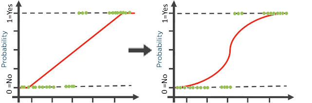
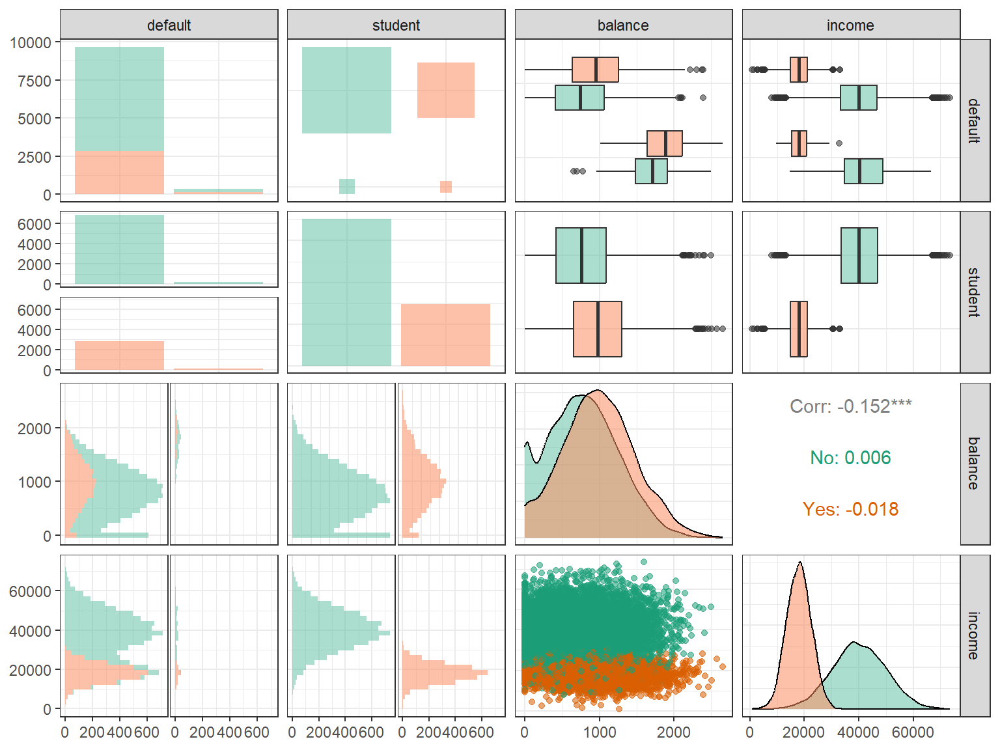
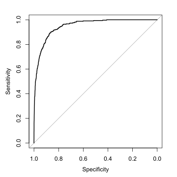

flowchart TD
P(Probability $$~P$$) --> |"$$\frac{P}{1-P}$$"| O(Odds $$~O$$)
P --> |"$$\log(\frac{P}{1-P})$$"| L(Log-odds $$~L$$)
O --> |"$$\log(O)$$"| L
L --> |"$$\exp(L)$$"| O
O --> |"$$\frac{O}{1+O}$$"| P
L --> |"$$\frac{1}{1+\exp(-L)}$$"| P
What if response variable is binary categorical? E.g. yes/no, success/failure, A/B.
Can represent responses as 1/0 and consider regressing probability of 1 (success), but need prediction to be constrained to [0,1]
Direct SLR/MLR not suitable since predicted response can NOT be limited to [0,1]
Solution: fit transformation of predicted probability of 1 with output range in [0,1]
Most commonly, we fit logistic function—i.e. log-odds—of estimated probability of 1

flowchart TD
P(Probability $$~P$$) --> |"$$\frac{P}{1-P}$$"| O(Odds $$~O$$)
P --> |"$$\log(\frac{P}{1-P})$$"| L(Log-odds $$~L$$)
O --> |"$$\log(O)$$"| L
L --> |"$$\exp(L)$$"| O
O --> |"$$\frac{O}{1+O}$$"| P
L --> |"$$\frac{1}{1+\exp(-L)}$$"| P
Probability \(\;P:~~[~\,0~\longleftarrow0.5\longrightarrow\,1~]\)
Odds \(~~~~~~~\,O:~~[~\,0~\longleftarrow\;1\,\longrightarrow\infty\,)\)
Log-odds \(~~~\,L:~(-\infty\longleftarrow0\,\longrightarrow\infty\,)\)
Odds are multiplicative, but log-odds are additive, increase in log-odds means increase in probability & vice versa
Also note, logistic function refers to:
\[ f(x)=\frac1{1+\exp(-x)}~~ \]
and its inverse, called logit function:
\[ f^{-1}(x)=\log\left(\frac{x}{1-x}\right)~~ \]
Note: don’t forget sign in \(\exp(-x)\) term
For each predictor value \(x\), suppose the true probability of 1 there, \(p(x)\) is:
\[ p(x)=\frac1{1+\exp[-(\beta_0+\beta_1x)]} \] Note this is equivalent to: \[ \log\left(\frac{p(x)}{1-p(x)}\right)=\beta_0+\beta_1x \]
Best fit \(\hat\beta_0\), \(\hat\beta_1\) are found numerically (no closed form solution), demo
Can be easily extended to MLR by adding \(\,{}+\beta_2x_{i,2}+\cdots+\beta_px_{i,p}\)
Can of course add categoricals, interactions, nonlinear terms, etc..
Thus, logistic regression equivalent to SLR/MLR with log-odds of 1 as response.
This means coefficients in summary table correspond to log odds, i.e:
Intercept is estimated baseline log-odds of 1 at \(x=0\),
Slope is estimated increase in log-odds for each 1 unit increase in \(x\)
Besides transforming to log-odds, there are some other differences:
Logistic regression usually fitted by MLE (maximum likelihood estimation), not OLS
Logistic regression is a type of GLM (generalized linear model), where transformation of mean is fitted to predictors
For logistic regression, equation directly models mean log-odds with predictors, not each individual 1/0 \(y_i\) response, so no error \(\ep_i\) terms
When predicting, use coefficients similarly to MLR to get predicted log-odds of 1, then can convert to probability if desired
In summary, all statistics are Z-based (i.e. normal) instead of T-based
Default datasetThe ISLR2 dataset Default contains (simulated) credit default data of customers:
# shuffle rows to better show categorical levels, then save and preview
Default = slice_sample(ISLR2::Default, prop=1) ; str(Default)'data.frame': 10000 obs. of 4 variables:
$ default: Factor w/ 2 levels "No","Yes": 1 1 2 1 1 2 1 1 1 1 ...
$ student: Factor w/ 2 levels "No","Yes": 1 2 1 1 1 1 1 1 1 1 ...
$ balance: num 939 398 1512 301 878 ...
$ income : num 45519 22711 53507 51540 29562 ... default student balance income
1 No No 939.0985 45519.02
2 No Yes 397.5425 22710.87
3 Yes No 1511.6110 53506.94Let’s predict which customers default, i.e. do not pay loans back, letting 1 be defaults
Default dataset (cont.)
Default dataset (cont.)# fit logistic model with glm(), remember to have family=binomial!!
glm.default = glm(default ~ . , data=Default, family=binomial)
# only print important rows, note deviance is a loss metric, but we won't worry about it
summary(glm.default) %>% {capture.output(.)[5:12]} %>% cat(sep="\n")Coefficients:
Estimate Std. Error z value Pr(>|z|)
(Intercept) -1.087e+01 4.923e-01 -22.080 < 2e-16 ***
studentYes -6.468e-01 2.363e-01 -2.738 0.00619 **
balance 5.737e-03 2.319e-04 24.738 < 2e-16 ***
income 3.033e-06 8.203e-06 0.370 0.71152
---
Signif. codes: 0 '***' 0.001 '**' 0.01 '*' 0.05 '.' 0.1 ' ' 1Interpretations:
Suppose we have a student with $2000 balance and $15,000 income. What are the predicted log-odds, odds, and probability of defaulting? Compute both manually & in R.
Answer:
# log-odds of defaulting = intercept + student coef + (2000 * balance coef) + (15000 * income coef)
(L = -1.087e1 + -6.468e-1 + 2000*5.737e-3 + 15000*3.033e-6)[1] 0.002695[1] 1.002699[1] 0.5006737[1] 0.5006737# use R to predict, note by default R gives log-odds! see help page of predict.glm() for details
predict(glm.default, newdata = tibble(student="Yes", balance=2e3, income=1.5e4)) %>% unname[1] 0.002691261# tell R to output prediction as probability instead
predict(glm.default, newdata = tibble(student="Yes", balance=2e3, income=1.5e4), type="response") %>% unname[1] 0.5006728Next, can take predicted probabilities above a threshold (often 0.5) as predicted 1, otherwise 0. These can be compared to true 1/0 values to get confusion matrix:
# easy R method: first get vector of true 1/0 values and convert to factor, a type of categorical representation
true.responses = Default$default %>% as.factor
# then, threshold predictions and convert first to numeric 1/0 values then to factor as well
pred.responses = (predict(glm.default,type="response") > 0.5) %>% as.numeric %>% as.factor
# use confusionMatrix() from caret package, set predicted/true values and what's "positive"
caret::confusionMatrix(data=pred.responses, reference=true.responses, positive="1") %>%
{capture.output(.)[c(1:8,17:21)]} %>% cat(sep="\n")Confusion Matrix and Statistics
Reference
Prediction 0 1
0 9627 228
1 40 105
Accuracy : 0.9732
Sensitivity : 0.3153
Specificity : 0.9959
Pos Pred Value : 0.7241
Neg Pred Value : 0.9769
Prevalence : 0.0333 In table below confusion matrix,
Confusion Matrix and Statistics
Reference
Prediction 0 1
0 9627 228
1 40 105
Accuracy : 0.9732
Sensitivity : 0.3153
Specificity : 0.9959
Pos Pred Value : 0.7241
Neg Pred Value : 0.9769
Prevalence : 0.0333 Consider confusion matrix below for predicting diabetes in the Pima Indians dataset. Compute accuracy, sensitivity, specificity, PPV, NPV, and prevalence.
No diabetes Yes diabetes
Predict 0 200 53
Predict 1 23 56Receiver Operating Characteristic (ROC) curve visualizes model stats across all thresholds not just 0.5. For each threshold, sensitivity vs specificity plotted.
More ROC curve “arches” into top left corner, the better the model is
Entire Area Under Curve (AUC) equals chance model can distinguish a 1 vs a 0
